Campus planning
The larger campus framework establishes the relationship between the academic field, water landscape and Sports Island.
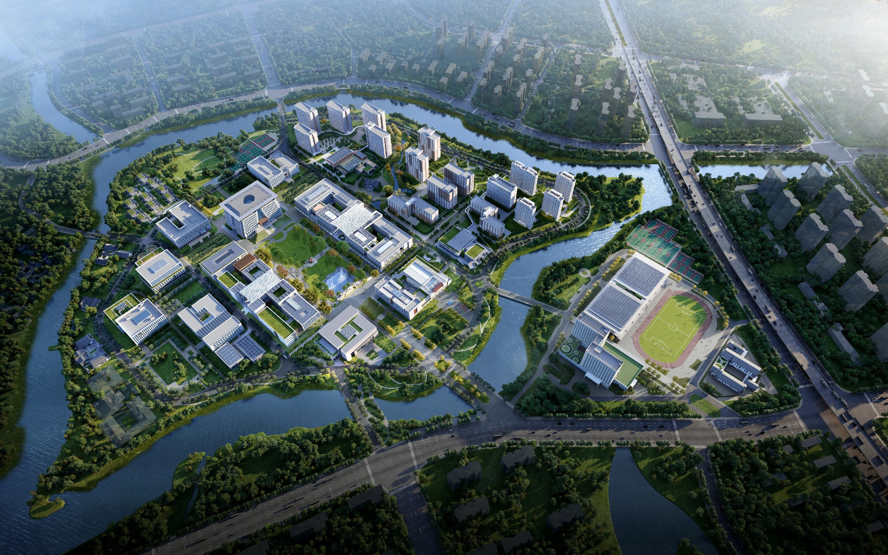
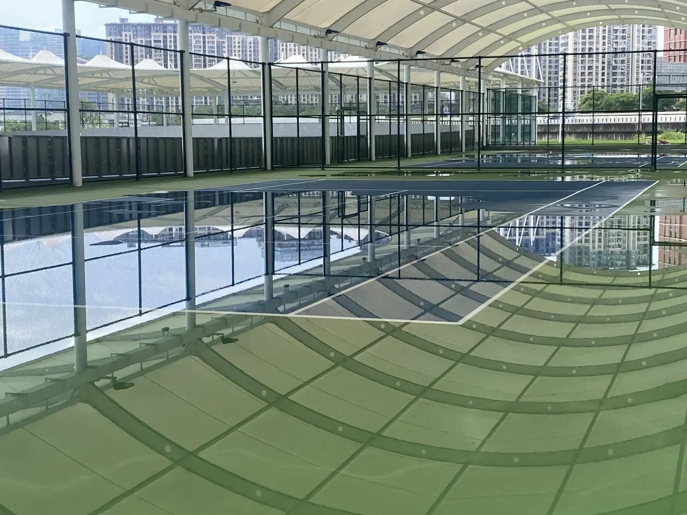
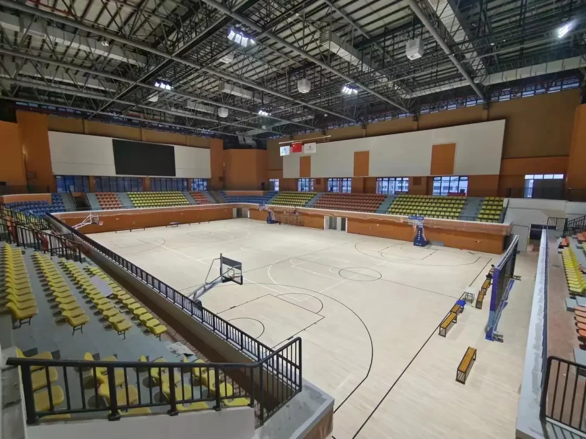
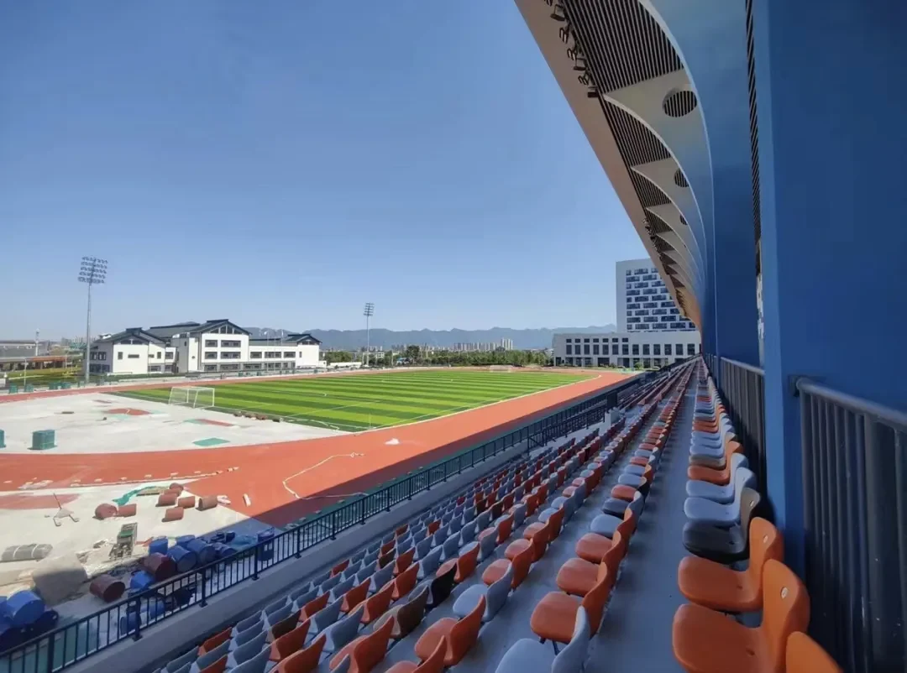
Fuyao University of Science and Technology is planned as a research-oriented university on Liuzhou Island, where the campus, surrounding water landscape and nearby technology district form one larger setting for learning and exchange.
Huaqing Andi's commission focused on the Sports Island. The portfolio story moves from the campus framework to three buildings, then separates the concept design work from the later construction drawing development for the Peibo Hotel.
The larger campus framework establishes the relationship between the academic field, water landscape and Sports Island.
The Sports Hall and International Exchange Center translate the shared framework into building-scale ideas.
The Peibo Hotel continued beyond concept design into the more exacting work of construction documentation.
The company scope included three buildings, while the individual contribution is stated separately and precisely.
A new university has to be planned as a field of relationships: academic programmes, public movement, landscape and the island setting. The campus is not only a collection of teaching buildings; it is an environment for research, exchange and everyday life.
At this scale, my role was to help establish the campus framework before moving into the Sports Island buildings. The planning work sets the ground on which the later building studies can be read.
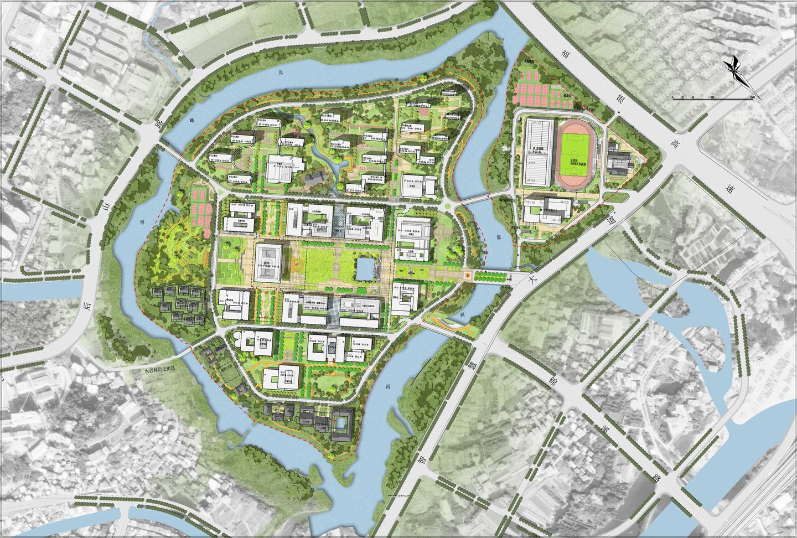
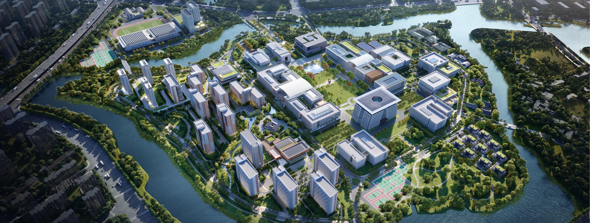
The campus sits within a dense network of rivers and channels. The relationship between the main academic campus, the surrounding landscape and the Sports Island becomes the first spatial question: how can a large institution remain connected without losing the clarity of its smaller daily places?
Water, bridges and planted edges form a continuous field around the buildings. The Sports Island is read as part of that larger system rather than as an isolated sports complex.
The island condition gives the campus a clear landscape boundary.
Teaching, research and everyday life remain connected across the campus.
Movement and shared ground connect the Sports Island back to the university.
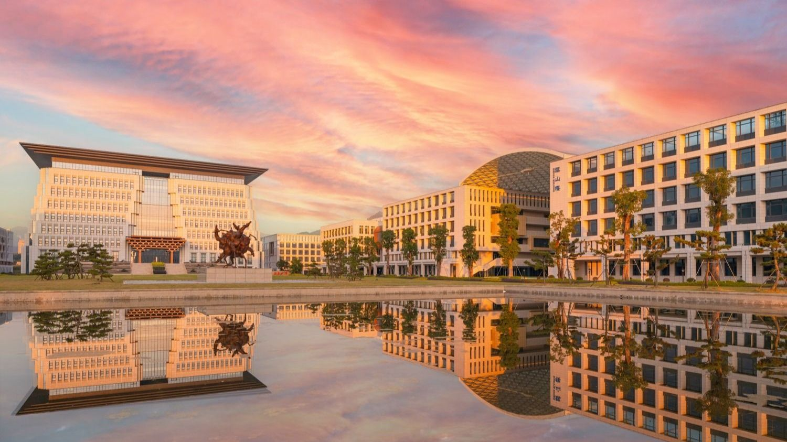
The Sports Island is where the campus framework becomes most public and most active. Basketball, swimming, climbing, multi-purpose courts, track and field bring different bodies and schedules into one shared landscape.
Its value is not measured only by the number of facilities. The island extends the campus beyond classrooms and laboratories, giving movement, rest and collective energy a clear place in the university's everyday structure.
Sports facilities support focused daily routines.
Shared edges bring different users into contact.
Large-span spaces support formal events and collective activity.
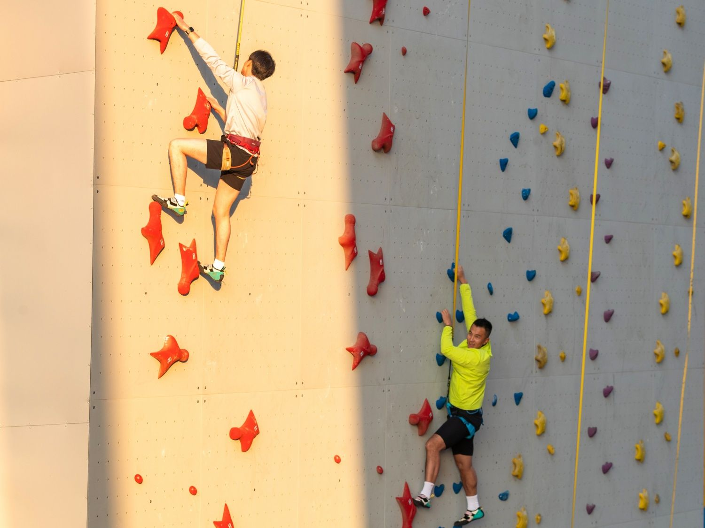
Huaqing Andi's Sports Island scope included a Sports Hall, an International Exchange Center (Peibo Hotel) and a Kindergarten. The three buildings share one setting, but the portfolio needs to distinguish company scope from individual contribution.
My work covered the campus planning, concept design for the Sports Hall and International Exchange Center, and the later construction drawing development for the Peibo Hotel. The Kindergarten is shown as part of the company scope, without claiming an individual design contribution.
Concept design
Concept design + construction drawing development
Company scope
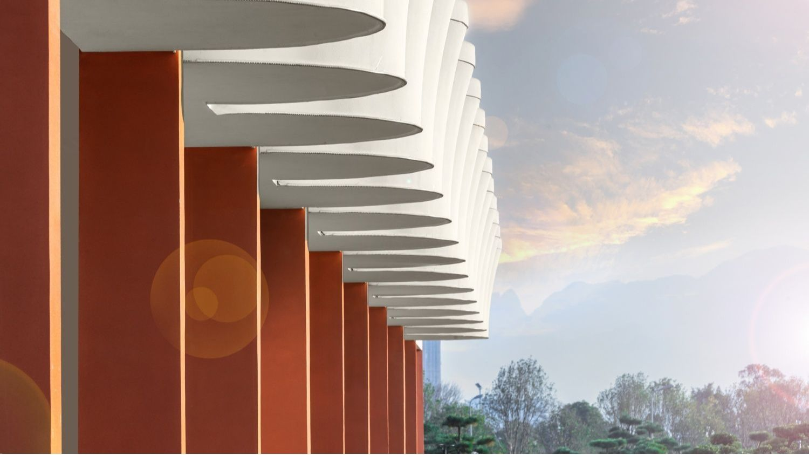
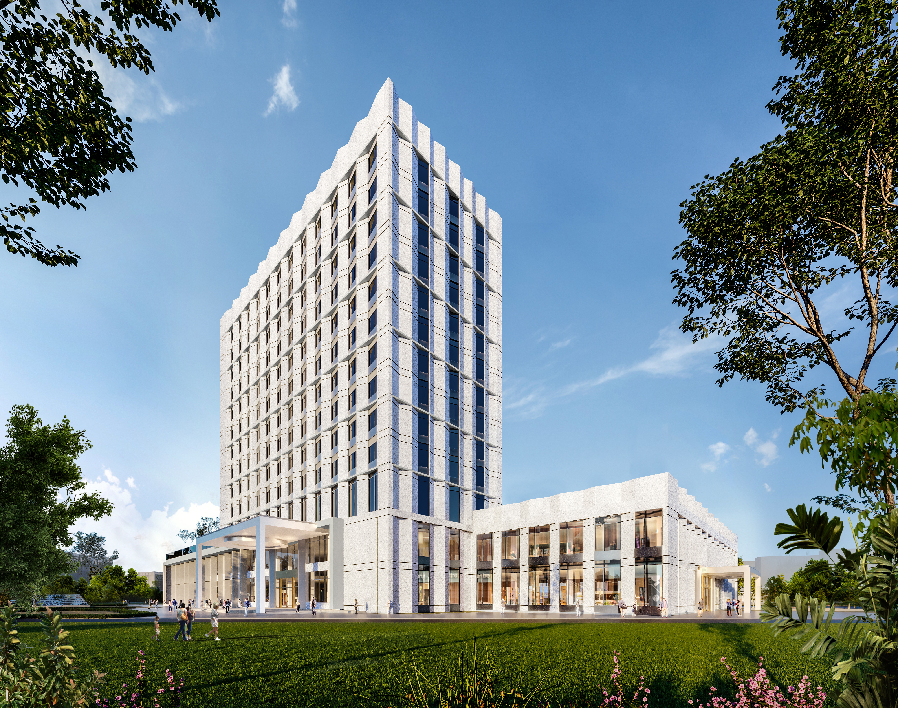


For the Sports Hall and International Exchange Center, the planning framework was tested through concept studies. For the Peibo Hotel, the work continued into construction drawing development, where the proposal had to become precise enough to coordinate space, structure, envelope and materials.
That progression is the central story of this project: one piece of work at campus scale, two buildings at concept scale, and one building carried further into documentation.
Campus framework and Sports Island relationship
Sports Hall and International Exchange Center
Peibo Hotel construction drawing development
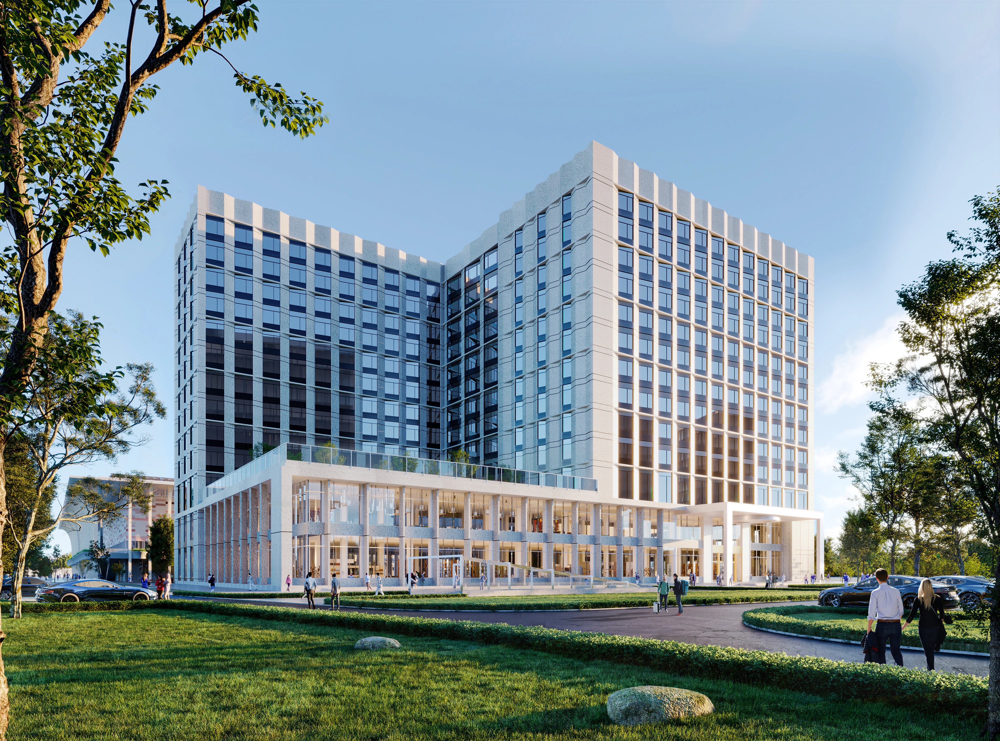


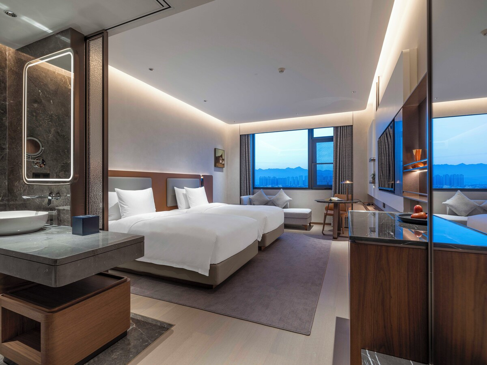
The record closes by separating the project-level scope from the specific work I carried through the different stages.
This project should be presented as a progression of scales rather than as one undifferentiated campus commission: planning establishes the field, building concepts test it, and documentation makes one building precise.
Sports Hall and International Exchange Center concept design; International Exchange Center (Peibo Hotel) construction drawing development.
Kindergarten shown as company scope only.Fuyao University's Sports Island is recorded here at the company-scope and individual-contribution levels, so the three-building commission remains clear without overstating personal authorship.
Back to top ↑